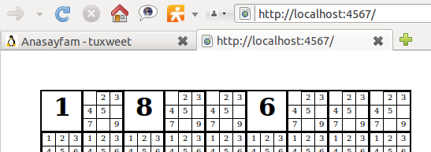

Sinatra - Sinatra is hard but nice, what can I do
When I was trying to learn Sinatra I found myself in an application. I want to tell about it step by step. First I made an application folder and create a file in it name is "susohe.rb".
1 |
require "rubygems" |
If you try to rub this file, first you need "sinatra" gem installed. Also it will not run properly because we want it to render a haml page named "index.haml". It will search that file in "views" subfolder of our application folder and throw an error because there is no file named "index.haml".
Let's create a subfolder and name it "views". Then create a file named "index.haml" in "views" subfolder. And put this lines in index.haml :
1 |
%h1 Hello from sinatra! |
After write this line and save the file you can run susohe.rb file and open localhost:4567 address in your browser. If there is no missing point you will see a huge "Hello from Sinatra!" in your browser window. It means that we are started to crawl on all fours.
When I was a young man like you, I saw an awesome Sudoku Solving Helper application. We'll try to make something like it. First some visual editings. How many cells are there in a sudoku table? 81 cells. We'll put 81 cells on the screen. In index.haml clear all lines and write these:
1 |
- (1..81).each do |x| |
Because it is not the main file we can refresh our browser without restarting the server. "-" sign in the first line means that there is a Ruby command line after it and it wil not produce an output. With these lines we are looping from 1 to 81 and put huge "1" writings on the screen. Hmm! where is boxes? Let's continue coding, if you inspect the source code of the page in your browser, there are 81 div which has "class='b'".
We'll first get these divs in a border like boxes, and allocate them like sudoku table. Say How? Sure we'll use CSS! Put these lines at the end of index.haml file.
1 |
|
From the first line, ":css" starts style definition lines. The indented lines after this line evaluated as css commands. First we style class="b" divs. "position. absolute;" because we want to allocate divs certain positions. We want solid, 2 pixel wide borders around our divs. Width and height are adjusted 51 pixel. And last, we want to center the writings in the div. These are enough but some browsers (like firefox) puts some margins default on <h1> tags. So we style the <h1> tags margin: 0; . Let's save the haml file and refresh our browser. Our 81 div has gone and there is only one boxed div on browser:

What happened? We styled divs as absolute position and didn't set their positions. So they are all at position 0:0 (top left korner in window). If you inspect the page source code, you'll see all our 81 divs are still in the page.
At this point we add some lines to our haml file and allocate 81 divs separate positions.
1 |
- (1..81).each do |x| |
To accomplish this, we write different styles for every div that we put, and allocate them at certain positions. Let's make changes and see the result by refreshing our page on browser.

Sudoku table appears slowly. We are focusing to control codes from view. I want that all available values will be written in cells as litle numbers. If one of these litle numbers cliked, that value will be the only available value for the cell, and others will be deleted. Next, this only value will be presented in a <h1> tag (like last picture).
So first create an array (which has 81 elements) to save all available values for cells. Stop the server and edit susohe.rb file like this :
1 |
require "rubygems" |
At startup, all values from "1" to "9" are posible. To show these values in our cells, we have to send the array to index.haml file. So we transfer the array to haml file with same name in "locals" block. Lets edit our haml file :
1 |
- mat[0]="1" |
We are assigning some test values to array elements on first two lines, so we can see the result. We'll remove them after. Lets test the view.

Our application takes its form. At this point something got my interest. I've tried to make same screen with static texts on wxRuby, but it was slower than this. I think Sinatra can be used for desktop application, as well as web application. And I decided to make a request from Sinatra developers - SinatraViewer.
Lets focus on the code we write, we have a new group of divs which have class="l". These are litle boxes which include available values in them. We added styles for it in css block. If a cell has only one available value we put this value in a <h1> tag. If there are more than one value available, we show all available values in litle boxes allocated in the cell. Backgroud logic like this:
We have a sudoku problem to solve, and there are given cell values. We'll select values by clicking corresponding litle number in cell, and cell takes this value. When a cell takes a value the same values on the row, column and 3x3 groups will be deleted. It must run opposite, if a single value in a cell clicked, cell gets all available values and turn back litle numbers. To do this we create two new method in susohe.rb file.
1 |
|
The first method catches urls like "localhost:4567/set/3/5". 3 in example assigned to :x parameter and 5 assigned to :xx parameter. This method replaces the value of cell with clicked number, and redirect to index page. It means that cell (:x numbered cell) will set the number :xx. Second method is to reset a cell which is setled before. How will it do this? It puts all values from 1 to 9 in the cell.
Let's edit our view file to call these methods accordingly:
1 |
|
With help of a litle bit JavaScript addition to our divs, we call our methods when they 're clicked. Yep! Save it, start application, and click items to see the result. Is that nice? Now it works with a few lines of code (Like all other Ruby programs).
There is nothing to add our view file after now. We'll work in our array. First start with rows, same numbers isn't allowed on same row. So if a number is setled in a cell we have to delete this number from all available values on the same row cells. Create a method named "check" to manage our array's manipulations.
1 |
require "rubygems" |
First we produce a list of cells which include a single value. This list has string elements. This elements are 3 character long, first one is row number, second one is column number and last one is cell's value. For example if 5th row's 3th column has value of 4, the array element of this cell will be "534".
After create singles array, we check all cells to delete values if there is single value in same row. If tested value isn't in singles array at same row, we add this value to cell's values. With "singles.detect {|v| v =~ (Regexp.new(row.to_s + "[1-9]" + x))}" syntax we hunt same values on the row in singles array.

With a same algorithm we can hunt same values on the column. Change the "if" condition :
1 |
|
As we made this modification, columns also goes under control. There is only exception , 3x3 groups. To accomplish this, first we need to determine which cells group of 3x3 that our cell allocated.
1 |
|
Then we add a new line to if condition for 3x3 groups. By the way we used "detect" method too many.
That's it. After now you have a helper application when you solve sudoku, and this application created by you. Enjoy it , develop it , and send me your feedback.

Tuxweet - Twitter - Rstat.us - Github - Identi.ca